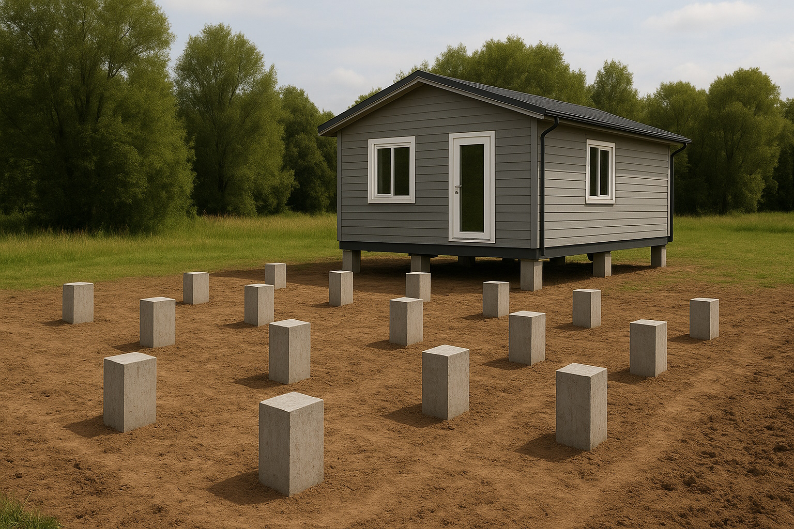
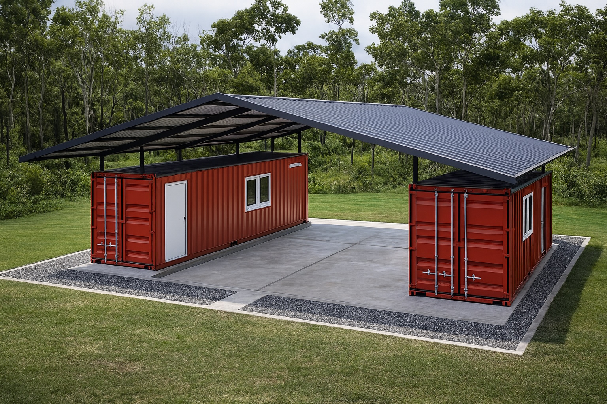

Fundament für Modulbau: Welche Varianten gibt es?
Damit ein Modul- oder Containergebäude lange stehen bleibt, ist ein sauberes Fundament wichtiger als jede Fassade. Aus der Praxis kennen wir drei Hauptvarianten: Punktfundamente, Streifenfundamente und die durchgehende Bodenplatte. Jede Lösung hat ihre Vorteile – und typische Fehler.

1. Punktfundamente – flexibel und oft ausreichend
Punktfundamente sind einzelne Betonblöcke, die die Last des Gebäudes punktuell aufnehmen. Sie eignen sich gut für leichtere Modulbauten, Gartenbüros oder Container, die nicht stark belastet werden.
- geringer Betonverbrauch und relativ günstige Lösung
- gute Option bei unebenem Gelände oder kleiner Fläche
- einfach nachträglich zu ergänzen oder zu verändern
Wichtig ist, dass alle Punkte exakt in der Höhe stimmen – sonst verzieht sich später der Modulbau, Türen und Fenster klemmen und Fugen öffnen sich.
2. Streifenfundament – für höhere Lasten
Streifenfundamente verlaufen linienförmig unter tragenden Wänden. Sie werden meist eingesetzt, wenn das Gebäude schwerer ist oder auf einer längeren Linie Lasten abgetragen werden müssen, zum Beispiel bei Reihen von Containern oder längeren Modulgebäuden.

Hier spielt die Schalung und die genaue Ausrichtung eine grosse Rolle. Ein sauberer Schnurgerüst-Aufbau und Kontrolle mit Laser oder Nivelliergerät sparen später viel Nacharbeit.
3. Bodenplatte – wenn es dauerhaft und massiv sein soll
Eine durchgehende Betonplatte ist die stabilste, aber auch teuerste Variante. Sie wird dort eingesetzt, wo hohe Lasten, häufige Nutzung oder sehr empfindliche Innenausbauten geplant sind – zum Beispiel bei Werkstätten mit Maschinen, Lagerhallen oder dauerhaft genutzten Bürogebäuden.
Die Platte erlaubt eine gleichmässige Lastverteilung und reduziert Setzungen, verlangt aber eine gute Planung von Entwässerung, Frostschutz und eventuell eingelegten Leitungen.
4. Typische Fehler auf der Baustelle
- Fundamenthöhe nicht sauber kontrolliert – Module stehen schief
- zu wenig oder falsche Bewehrung bei Streifen und Platten
- fehlender oder falscher Frostschutz bei Aussenflächen
- keine klare Trennung zwischen Beton und Erdreich (keine Sauberkeitsschicht)
Aus unserer Erfahrung lohnt es sich, bei der Fundamentplanung nicht zu sparen. Ein gerader, stabiler Unterbau macht den gesamten Aufbau des Modulgebäudes schneller und sauberer.
Video: Beispiel eines Modulbau-Fundaments
In diesem Video sehen Sie ein typisches Punktfundament für ein kleines Modulgebäude (Beispielvideo – hier können Sie später Ihr eigenes Video aus der Praxis einfügen):